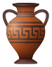

Attributes | Resource tokens | |||||
|  | ||||||
| Military | Culture | Faith | Gold | Mana | Fire | |
All players choose their favorite race and reveal them simultaneously. Use the Race cards.
Players have chosen different races: deal all cards of the corresponding races to the players.
Players have chosen same race: take all cards of that race, shuffle them, and deal half to each player. In case of odd number of cards, the last one is removed from the game.
Repeat the above process one additional time.
Shuffle all remaining cards. Each player draws cards until they have at least 50 and at most 70 cards. This is their deck.
Each player shuffles their deck and draws 10 cards. This is their hand.
Each player may discard any cards and draw again same amount.
Finally, each player receives 3 universal resource tokens (can be used as any of / / ).
The game is played in 6 rounds.
Each round, all players play one turn, one after another, always in the same order.
Each turn, the player plays the phases as described below, in this order.
Apply turn beginning effects on cards.
Cards that allow transformations may transform now.
You need to have the cards to transform into in your hand.
The previous card goes back to your hand, and can be used for other transformations.
If the transformed card has any effects, they are applied immediately, except transformations and production.
Transformations do not cost any resources, even if there is some cost printed on the card.
Transformed creatures keep their items and tokens. Meaning of the tokens may be changed in this way.
Put extra cards face-down on creatures or buildings as the resource tokens they have produced.
The kind of a token is always known by the card it is placed on.
Tokens are always face-down cards taken from the remaining cards that were not assigned to either player, or cards removed from the game.
You may choose from which cards to take tokens when spending them. It is possible to spend tokens from multiple cards at once.
Remove the cards representing the spent tokens from the game.
Decide if you want to attack your opponent and state your decision.
If you have decided to attack, proceed to the combat rules, then proceed to Cards phase.
If you have decided not to attack, proceed to the next phase normally.
Place one creature or building into the play on your side of the table.
If the creature/building has effects, they are immediately applied, except transformation and production.
You can have at most one artifact. Artifacts cannot be targeted, transformed, killed, stolen, or removed.
Give items to own creatures.
You may give up to 2 items in one turn.
Effects on the items, if any, are immediately applied, except production.
Each creature may have at most one item. Buildings cannot have any items.
Creatures of some races cannot have items, but you may give items to other creatures even if you have chosen such race.
Play non-combat spells.
You may play up to 2 spells in one turn.
Used spell cards are removed from the game.
Discard up to 5 cards and draw same amount plus two.
Apply turn end effects on cards.
Dead creatures may be resurrected for 1 each and buildings for 1 each.
All game end rules are applied.
All non-final additive, multiplicative, and conversion effects are applied, in this order.
Attributes from all cards are summed for each player.
All final effects are applied: additive, multiplicative, and conversions, in this order.
Players with all cards in play (creatures, buildings, and items) of the same race gain bonus +10 to .
Players with negative multiply it by -1.
Winner is decided (use first applicable rule):
If one player has more than 30 lead in one attribute ( / / ), that player wins, unless the other player has over 30 lead in another attribute.
Player who leads (by any amount) in more attributes ( / / ) wins.
Player with the highest sum of attributes ( + + ) wins.
Player with more resource tokens ( + + ) wins.
Its a draw.
Winner of the combat kills (disables) one of opponent's creatures or buildings.
TODO: defending with faith
TODO
When discarding and drawing again, you first discard all the cards, and only after that you draw new cards.
Discarded cards go to the bottom of player's deck.
In final game evaluation, players are considered as out of combat.